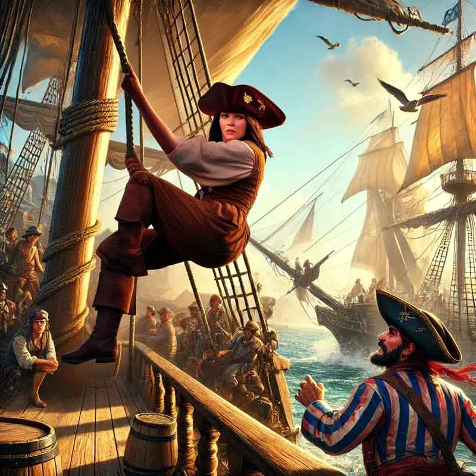

Testing the Worth of the Scourge’s Bane
July 13, 2024
The crew of the Scourge’s Bane set sail for Port Peril with a singular purpose: to petition the Hurricane King, Kerdak Bonefist, for a letter of marque. This coveted document would officially recognize them as pirates of the Shackles, granting them legitimacy and marking their rise in power. Arriving in the chaotic and bustling port, the crew knew that gaining an audience with the Hurricane King would not be easy. They managed to secure an "appointment" through a combination of charm, reputation, and a hefty bribe. With their audience scheduled for the following morning, the crew prepared for whatever challenges lay ahead.
As the sun rose over Port Peril, the Hurricane King’s first mate, Tsadok Goldtooth, appeared at the docks, his arrival drawing a crowd eager to witness the proceedings. With a glint of amusement in his eye, Tsadok announced that the crew would have to prove their worth through a series of challenges. "Let’s see if these play pirates are worthy of becoming captains themselves," he jeered, his words a thinly veiled insult. The crowd murmured in anticipation as the first challenge was revealed: a race to the top of a ship’s foremast.
One of the heroes would race against a member of Tsadok’s crew to see who could unfurl their sail first. The rules forbade certain magics, but Kasmira, ever clever and quick, donned slippers of spider climbing—an enchantment that was not specifically prohibited. As the race began, she shot up the rigging with ease, her movements swift and calculated. Remembering to work smart, she moved from side to side, untying the knots evenly to prevent the wind from catching one side and making the other more difficult. Her strategy paid off as she quickly gained the lead.
As the race unfolded, Finn and Varen noticed a suspicious figure among the spectators. The man was fiddling with a line securing the forestay boom, clearly intending to sabotage Kasmira’s climb by releasing the boom to swing dangerously into the mast. Without moving a muscle, Finn used his telekinetic powers to hold the boom steady, ensuring that Kasmira’s ascent was uninterrupted. With no interference, Kasmira reached the top first and unfurled the sail, securing victory for the first challenge.
Next came a "friendly" game of cards against Tsadok himself, a test of wit and deception. Varen, confident in his perceptive skills, took on the challenge, sitting across from Tsadok for a round of "Bastard’s Fool." As the game progressed, Varen watched Tsadok closely, countering every attempt at cheating with his own subtle bluffs and sleight of hand. With a final flourish, Varen laid down his winning hand, taking the full purse and winning the second challenge. The crowd erupted in cheers, impressed by the crew's cunning.
The third and final challenge was far more dangerous than the first two: a test of combat prowess. Three giant cages were wheeled to the pier, each containing a marsh giant—a monstrous creature of formidable strength. The crew was tasked with defending their ship from the giants’ assault, a real fight that could not be taken lightly. The crowd, sensing the impending chaos, backed away as the cages were opened, and the giants lumbered out, immediately hurling boulders toward the crew. One giant conjured a thick fog that enveloped Red and Kasmira, obscuring their vision and complicating their defense.
From his perch in the crow’s nest, Varen began firing his musket at the spell-casting giant, each shot ringing out above the din. Kasmira, using her shadow step ability, teleported directly to the giants, her pistol blazing as she fired into their ranks. Finn coordinated the crew to fire the ship’s ballista, sending massive bolts into the fray. Red charged forward, his axe glinting in the sunlight as he met the giants in brutal melee combat. The battle was fierce, with boulders crashing and the giants’ roars echoing across the harbor. One by one, the giants fell—first to Varen’s musket, then to Kasmira’s pistol, and finally to Red’s mighty axe, each strike a testament to their skill and bravery.
With all three challenges completed, Tsadok stepped forward, a grudging respect in his eyes. "You lot have proven yourselves to be good sorts," he declared, turning to address the crowd. "They are indeed worthy of being pirates of the Shackles!" The onlookers erupted in applause, cheering the crew’s victory. Tsadok announced that the Hurricane King himself would bestow the letter of marque at a feast that very night. The crew of the Scourge’s Bane had proven their mettle, their path to becoming recognized pirates of the Shackles now firmly in sight. As they prepared for the evening’s festivities, the promise of new adventures and greater glory beckoned, their names soon to be etched among the legends of the high seas.